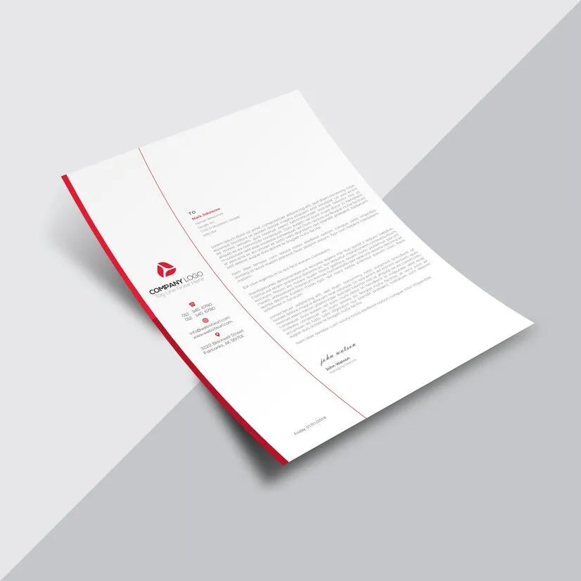

Елена Иванова
ОнлайнЛично
Клинический психолог28 летОпыт 4 года
Москва, м. Электрозаводская
Помогу бережно пройти через кризисные сложные ситуации, чтобы жить наполненной и вкусной
жизнью. Работаю онлайн так же эффективно как и очно
Специализация:
Отношения
Стресс
Зависимость
Тревога
Депрессия
Отношения
Выгорание
Отношения
Отношения
Стресс
Зависимость
Тревога
Депрессия
Отношения
Выгорание
Методы психотерапии
КПТ
С помощью проверенных техник и упражнений КПТ помогает работать над реакциями на
ситуации, освобождением от стереотипов, установок и шаблонов поведения, которые
негативно влияют на жизнь.
Психоаналитическая терапия
С помощью проверенных техник и упражнений КПТ помогает работать над реакциями на
ситуации, освобождением от стереотипов, установок и шаблонов поведения, которые
негативно влияют на жизнь.
Юнгианский анализ
С помощью проверенных техник и упражнений КПТ помогает работать над реакциями на
ситуации, освобождением от стереотипов, установок и шаблонов поведения, которые
негативно влияют на жизнь.
Гештальт
С помощью проверенных техник и упражнений КПТ помогает работать над реакциями на
ситуации, освобождением от стереотипов, установок и шаблонов поведения, которые
негативно влияют на жизнь.
Коучинг
С помощью проверенных техник и упражнений КПТ помогает работать над реакциями на
ситуации, освобождением от стереотипов, установок и шаблонов поведения, которые
негативно влияют на жизнь.
Арт-терапия
С помощью проверенных техник и упражнений КПТ помогает работать над реакциями на
ситуации, освобождением от стереотипов, установок и шаблонов поведения, которые
негативно влияют на жизнь.
Образование
Документы проверены

2020 - 2022
Диплом о высшем образовании. Магистратура "Психолого-педагогическое
образование"
2020
Общество практикующих психологов "Гештальт-подход" Нейрофизиология травмы. Терапия
травмы в модели ДПДГ и тештальт-подходе
2018
Московская психодраматическая конференция ведущая мастер-класса Полуденные тени.
Трансформационная сказка души
2014-2017
Институт психодрамы коучинга и Ролевого тренинга (ИПКИРТ) психодраматерапев,
групповой терапевт
О моём подходе
Мы с вами встречаемся онлайн или очно каждую неделю и говорим о том что важно для вас.
Первые несколько встреч - вы знакомитесь со мной, а я с вами. После 5-7 встреч мы решаем
идём ли дальше в долгосрочную терапию или ограничимся форматом консультирования
Методы которые я использую: гештальттерапия, психодрама, арттерапия, ДПДГ
Гештальттерапия - метод диалога, в котором я уделяю внимание тому, что вы чувствуете и как это проявляется в теле. Также мы находим незавершённые ситуации, которые оттягивают внимание и силы, и завершаем их.
Психодрама - метод действия. Мы на встречах с помощью подручных материалов разыгрываем сцены из вашей жизни, что позволяет увидеть ситуацию с разных сторон, скорректировать свои реакции, сделать осознанный выбор
Методы которые я использую: гештальттерапия, психодрама, арттерапия, ДПДГ
Гештальттерапия - метод диалога, в котором я уделяю внимание тому, что вы чувствуете и как это проявляется в теле. Также мы находим незавершённые ситуации, которые оттягивают внимание и силы, и завершаем их.
Психодрама - метод действия. Мы на встречах с помощью подручных материалов разыгрываем сцены из вашей жизни, что позволяет увидеть ситуацию с разных сторон, скорректировать свои реакции, сделать осознанный выбор
Отзывы
14
Анна
14 апреля 2024
Мы с Еленой встречались уже 3 раза, один раз в очном формате и два раза онлайн, как в
первом, так и во втором варианте все было комфортно. После встреч испытываю реально
чувство облегчения и веры в то, что все ситуации поправимы! Даже после малого количества
сессий, я чувствую некоторые изменения в себе, что радует. Могу смело порекомендовать
Надежду, так как у нее очень эмпатийный стиль общения Мы с Еленой встречались уже 3
раза, один раз в очном формате и два раза онлайн, как в первом, так и во втором варианте
все было комфортно. После встреч испытываю реально чувство облегчения и веры в то, что
все ситуации поправимы! Даже после малого количества сессий, я чувствую некоторые
изменения в себе, что радует. Могу смело порекомендовать Надежду, так как у нее очень
эмпатийный стиль общения. Даже после малого количества сессий, я чувствую некоторые
изменения в себе, что радует. Могу смело порекомендовать Надежду, так как у нее очень
эмпатийный стиль общения. Мы с Еленой встречались уже 3 раза, один раз в очном формате и
два раза онлайн, как в первом, так и во втором варианте все было комфортно.
читать дальше
Анна
14 апреля 2024
Анна
14 апреля 2024
Мы с Еленой встречались уже 3 раза, один раз в очном формате и два раза онлайн, как в
первом, так и во втором варианте все было комфортно. После встреч испытываю реально
чувство облегчения и веры в то, что все ситуации поправимы! Даже после малого количества
сессий, я чувствую некоторые изменения в себе, что радует. Могу смело порекомендовать
Надежду, так как у нее очень эмпатийный стиль общения Мы с Еленой встречались уже 3
раза, один раз в очном формате и два раза онлайн, как в первом, так и во втором варианте
все было комфортно. После встреч испытываю реально чувство облегчения и веры в то, что
все ситуации поправимы! Даже после малого количества сессий, я чувствую некоторые
изменения в себе, что радует. Могу смело порекомендовать Надежду, так как у нее очень
эмпатийный стиль общения. Даже после малого количества сессий, я чувствую некоторые
изменения в себе, что радует. Могу смело порекомендовать Надежду, так как у нее очень
эмпатийный стиль общения. Мы с Еленой встречались уже 3 раза, один раз в очном формате и
два раза онлайн, как в первом, так и во втором варианте все было комфортно.
читать дальше
Загрузить ещё